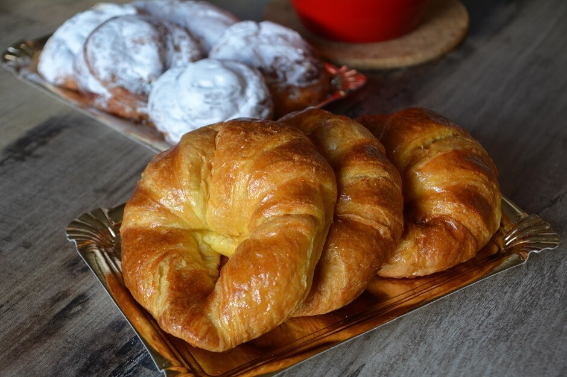
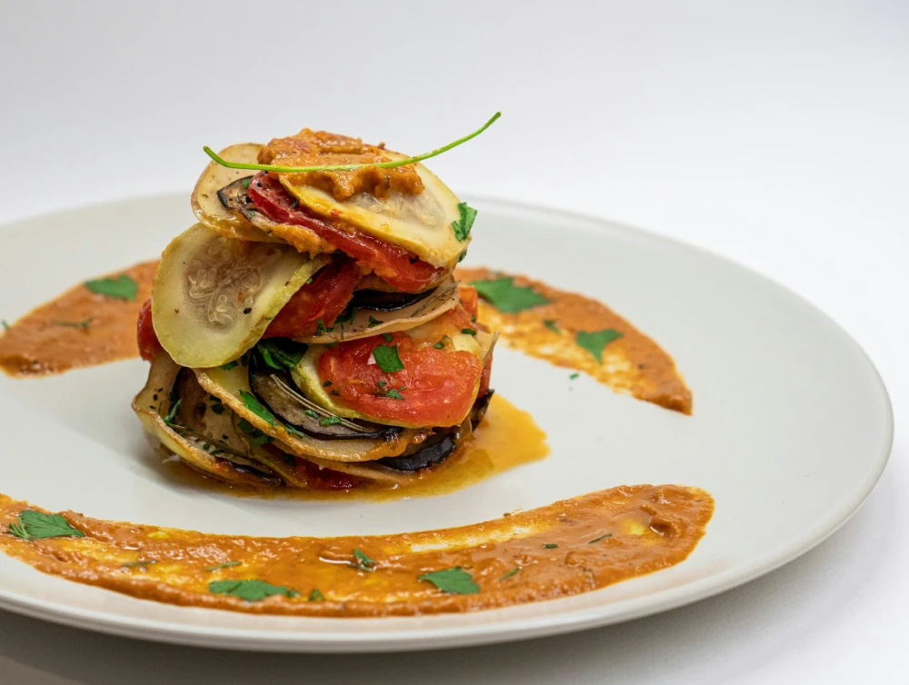
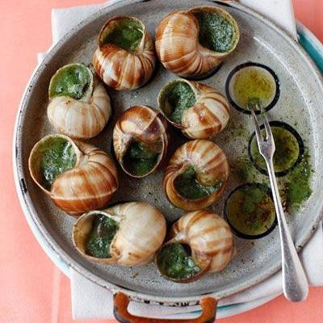

Croissant
Um clássico do café da manhã francês, feito com massa folhada amanteigada.

Ratatouille
Prato à base de legumes, típico da região de Provence, famoso pelo filme homônimo.

Escargot
Prato francês feito com caracóis terrestres, geralmente preparados com manteiga, alho e ervas. Considerado uma iguaria na França.

Crème Brûlée
Uma sobremesa clássica feita com creme de baunilha coberto por uma camada de açúcar caramelizado crocante.